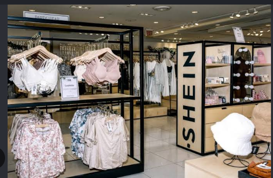
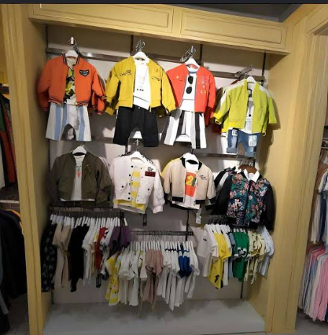
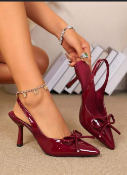
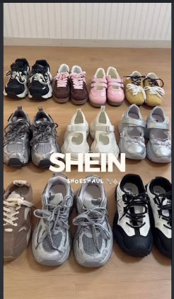
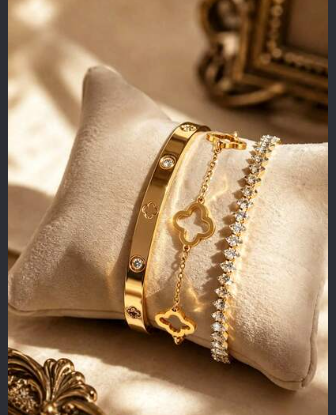
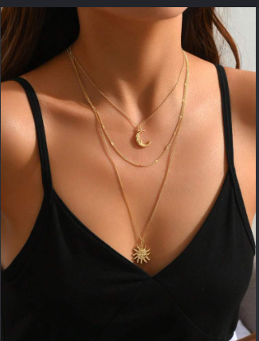
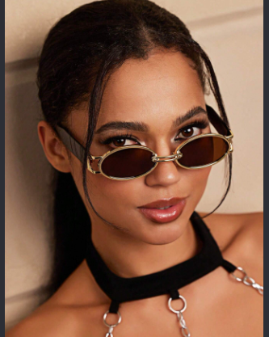
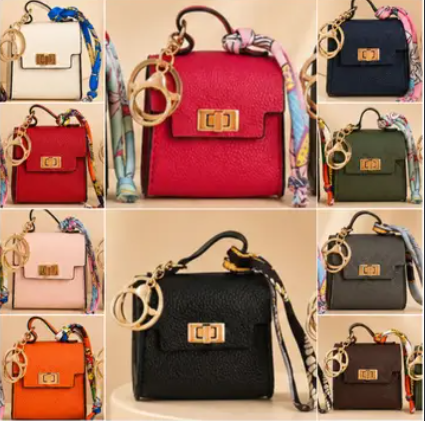
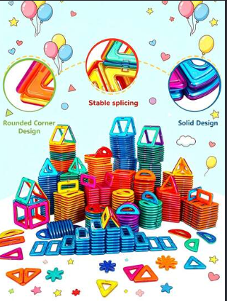
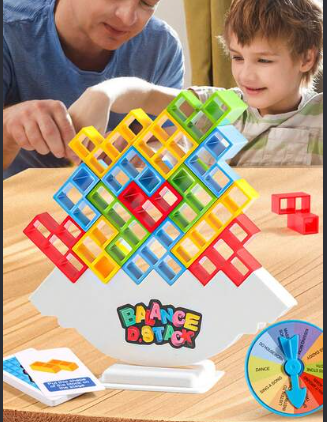

CLOTHES  SHEIN offers a diverse and affordable range of fashion designed to suit every individual's unique style. Featuring constantly updated clothing with modern patterns and trends, SHEIN makes it easy to stay ahead of the fashion curve. From chic apparel made for all body types to trendy shoes, jewelry, and everyday accessories, the platform delivers a complete, head-to-toe shopping experience for every occasion. |
SHOES  SHEIN offers a trendy and highly affordable collection of footwear designed to complement any style or occasion. From comfortable everyday sneakers and sleek flat sandals to stylish block heels and bold fashion boots, the range features modern designs that easily elevate your look. For the best shopping experience, we recommend checking the detailed centimeter size guide and customer photos to find the perfect fit and style for your wardrobe. |
JEWELRY  SHEIN offers a versatile collection of affordable jewelry designed to suit any style. Their minimalist pieces—like thin layered necklaces, stackable rings, and small huggie hoops—are perfect for effortless everyday wear. For bolder looks, you can choose statement accessories such as chunky chain necklaces, rhinestone drop earrings, or stylish arm cuffs that instantly upgrade a simple outfit. They also feature trendy Y2K-inspired pearl chains and charm bracelets. For better durability, look for stainless steel options and check customer photos in the review section before ordering. |
Accessories  SHEIN offers a versatile range of stylish and budget-friendly accessories to complete any outfit. For everyday essentials, their classic handbags, sleek faux-leather belts, and minimalist hair claw clips add a subtle yet put-together touch to your look. If you want to make a bolder statement, you can explore their selection of oversized sunglasses, patterned silk scarves, and eye-catching hats like berets or bucket hats. They also feature trendy phone charms, cute keychains, and aesthetic socks that easily bring a pop of personality to casual wear. To get the best value, check the material details in the product descriptions and look at real customer photo reviews before adding items to your cart. |
Kids Toys  SHEIN offers a delightful selection of fun and budget-friendly kids' toys suitable for various age groups and interests. For toddlers and young children, their collection includes soft plushies, colorful sensory squishy toys, and simple Montessori-inspired wooden puzzles that help develop motor skills. For older or creative kids, SHEIN features interactive STEM building sets, DIY craft kits, and fun drawing tablets that encourage imaginative play. They also provide popular outdoor and pretend-play items like mini kitchen accessories, bubble machines, and pop-it fidget toys. Before buying, always check the recommended age range on the item page and read customer reviews to ensure safety and quality. |